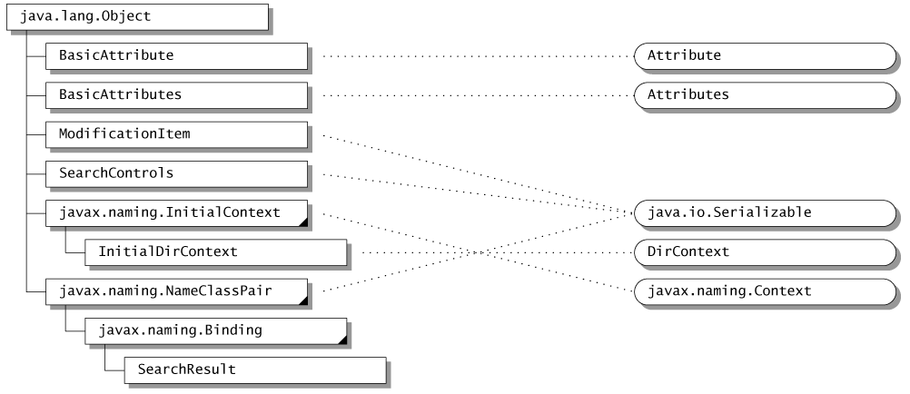
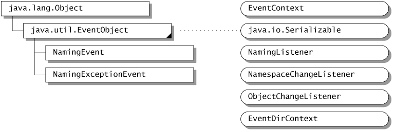
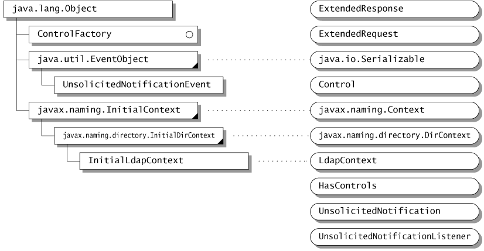

| CONTENTS | PREV | NEXT |
The JNDI API is contained in four packages:
javax.naming contains classes and
interfaces for accessing naming servicesjavax.naming.directory extends the
core javax.naming package to provide access to
directoriesjavax.naming.event contains classes
and interfaces for supporting event notification in naming and
directory servicesjavax.naming.ldap contains classes
and interfaces for supporting LDAP v3 extensions and controlsThe JNDI service provider interface is contained one package:
The following sections provide an overview of the JNDI API. For more details on the API, see the corresponding javadoc.
javax.naming 1(exception classes are not shown)
Context is the core interface that
specifies a naming context. It defines basic operations such as
adding a name-to-object binding, looking up the object bound to a
specified name, listing the bindings, removing a name-to-object
binding, creating and destroying subcontexts of the same type,
etc.
public interface Context {
public Object lookup(Name name) throws NamingException;
public void bind(Name name, Object obj) throws NamingException;
public void rebind(Name name, Object obj) throws NamingException;
public void unbind(Name name) throws NamingException;
public void rename(Name old, Name new) throws NamingException;
public NamingEnumeration listBindings(Name name) throws NamingException;
...
public Context createSubcontext(Name name) throws NamingException;
public void destroySubcontext(Name name) throws NamingException;
...
};
Every
naming method in Context takes a name as an argument.
The operation defined by the method is performed on the
Context object that is obtained by implicitly
resolving the name. If the name is empty ("") the
operation is performed directly on the context itself. The name of
an object can be a composite name reflecting the arrangement of the
namespaces used to refer to the object. Of course, the client is
not exposed to any naming service implementation. In fact, a new
type of naming service can be introduced without requiring the
application to be modified or even disrupted if it is running.
In
JNDI, every name is relative to a context. There is no notion of
"absolute names." An application can bootstrap by
obtaining its first context of class InitialContext
:
public class InitialContext implements Context {
public InitialContext()...;
...
}
The initial context contains a variety of bindings that hook up the client to useful and shared contexts from one or more naming systems, such as the namespace of URLs or the root of DNS.
The
Name interface represents a generic name--an ordered
sequence of components. Each Context method that takes
a Name argument has a counterpart that takes the name
as a String instead. The versions using
Name are useful for applications that need to
manipulate names: composing them, comparing components, and so on.
The versions using String are likely to be more useful
for simple applications, such as those that simply read in a name
and look up the corresponding object. The String name
parameter represents a composite name. The Name
parameter can represent a composite name or a compound
name .
The
CompositeName class represents a sequence of names
(atomic or compound) from multiple namespaces. If the
Name parameter supplied to a method of the
Context class is an instance of
CompositeName , the name represents a composite
name.
If
the Name parameter supplied to a method of the
Context class is not an instance of
CompositeName , the name represents a compound name,
which can be represented by the CompoundName class or
some other implementation class. The CompoundName
class represents hierarchical names from a single namespace. A
context's name parser can be used to manipulate compound names in
the syntax associated with that particular context:
public interface Context {...public NameParser getNameParser(Name name) throws NamingException;...}
A namespace browser is an example of the kind of application that might need to manipulate names syntactically at this level. Most other applications will work with strings or composite names.
Context.lookup() is the most
commonly used operation. The context implementation can return an
object of whatever class is required by the Java application. For
example, a client might use the name of a printer to look up the
corresponding Printer object, and then print to it
directly:
Printer printer = (Printer) ctx.lookup("treekiller");
printer.print(report);
Context.listBindings() returns an
enumeration of name-to-object bindings, each binding represented by
an object of class Binding . A binding is a tuple
containing the name of the bound object, the name of the object's
class, and the object itself.
The
Context.list() method is similar to
listBindings() , except that it returns an enumeration
of NameClassPair objects. Each
NameClassPair contains an object's name and the name
of the object's class. The list() method is useful for
applications such as browsers that wish to discover information
about the objects bound within a context, but don't need all of the
actual objects. Although listBindings() provides all
of the same information, it is potentially a much more expensive
operation.
public class NameClassPair ... {
public String getName() ...;
public String getClassName() ...;
...
}
public class Binding extends NameClassPair {
public Object getObject() ...;
...
}
Different Context implementations
are able to bind different kinds of objects natively. A
particularly useful object that should be supported by any
general-purpose context implementation is the
Reference class. A reference represents an object that
exists outside of the directory. References are used to give JNDI
clients the illusion that objects of arbitrary classes are able to
be bound in naming or directory services--such as X.500--that do
not have native support for objects in the Java programming
language.
When
the result of an operation such as Context.lookup() or
Binding.getObject() is a Reference
object, JNDI attempts to convert the reference into the object that
it represents before returning it to the client. A particularly
significant instance of this occurs when a reference representing a
Context of one naming system is bound to a name in a
different naming system. This is how multiple independent naming
systems are joined together into the JNDI composite namespace.
Details of how this mechanism operates are provided in the JNDI SPI
document.
Objects that are able to be represented by a
reference should implement the Referenceable
interface. Its single method -- getReference() --
returns the object's reference. When such an object is bound to a
name in any context, the context implementation might store the
reference in the underlying system if the object itself cannot be
stored natively.
Each
reference may contain the name of the class of the object that it
represents, and may also contain the location (typically a URL)
where the class file for that object can be found. In addition, a
reference contains a sequence of objects of class
RefAddr . Each RefAddr in turn contains a
"type" string and some addressing data, generally a
string or a byte array.
A
specialization of Reference called a
LinkRef is used to add "symbolic" links into
the JNDI namespace. It contains the name of a JNDI object. By
default, these links are followed whenever JNDI names are
resolved.
Some naming/directory services support the notion of referrals for redirecting a client's request to another server. The JNDI client can request that referrals be automatically followed, be ignored, or be processed manually.
The
abstract class ReferralException is used to represent
a referral:
public abstract class ReferralException extends NamingException {
public abstract Context getReferralContext() throws NamingException;
...
public abstract Object getReferralInfo();
public abstract void retryReferral();
public abstract boolean skipReferral();
}
When a
referral is encountered and the client has requested that referrals
not be ignored or automatically followed, a
ReferralException is thrown. The
getReferralInfo() method provides information--in a
format appropriate to the service provider--about where the
referral leads. The application is not required to examine this
information; however, it might choose to present it to a human user
to help him determine whether to follow the referral or not.
skipReferral() allows the application to discard a
referral and continue to the next referral (if any).
To continue the operation, the application re-invokes the method on the referral context using the same arguments it supplied to the original method.
javax.naming.directory 2

(exception classes are not shown)The
DirContext interface enables the directory capability
by defining methods for examining and updating attributes
associated with a directory object.
public interface DirContext extends Context {
public Attributes getAttributes(Name name)
throws NamingException;
public Attributes getAttributes(Name name, String[] attrIds)
throws NamingException;
...
public void modifyAttributes(Name name, int modOp, Attributes attrs)
throws NamingException;
public void modifyAttributes(Name name, ModificationItem[] mods)
throws NamingException;
...
}
The
getAttributes() operations on a directory return some
or all of its attributes. Attributes are modified using two forms
of modifyAttributes() . Both forms make use of a
"modification operation," one of:
ADD_ATTRIBUTE REPLACE_ATTRIBUTE REMOVE_ATTRIBUTE
The
ADD_ATTRIBUTE operation adds values to an attribute if
that attribute already exists, while the
REPLACE_ATTRIBUTE operation discards any pre-existing
values. The first form of modifyAttributes() performs
the specified operation on each element of a set of attributes. The
second form takes an array of objects of class
ModificationItem :
public class ModificationItem {
public ModificationItem(int modOp, Attribute attr) ...;
...
}
Each
operation is performed on its corresponding attribute in the order
specified. When possible, a context implementation should perform
each call to modifyAttributes() as an atomic
operation.
A
directory object contains a set of zero or more
Attribute objects. Each attribute is denoted by a
string identifier and can have zero or more values of any type.
public interface Attribute ... {
...
public String getID();
public Object get(int n) throws NamingException;
public boolean isOrdered();
public NamingEnumeration getAll()
throws NamingException;
...
}
An attribute's values can be ordered or unordered. If the values are unordered, no duplicates are allowed. If the values are ordered, duplicates are allowed.
Attributes are grouped into a collection by
using the Attributes interface.
public interface Attributes ... {
...
public Attribute get(String attrID);
public NamingEnumeration getIDs();
public NamingEnumeration getAll();
public Attribute put(Attribute attr);
public Attribute remove(String attrID);
...
}
JNDI
provides implementations for these two interfaces,
BasicAttribute and BasicAttributes , for
convenience. Service providers and applications are free to use
their own implementations.
Note
that updates to Attributes and Attribute
, such as adding or removing an attribute or its value, do not
affect the corresponding representation in the directory. Updates
to the directory can only be effected by using
DirContext.modifyAttributes() .
The
DirContext interface also behaves as a naming context
by extending the Context interface. This means that
any directory object can also provide a naming context. In addition
to a directory object keeping a variety of information about a
person, for example, it is also a natural naming context for
resources associated with that person: a person's printers, file
system, calendar, etc.
Hybrid operations perform certain naming and directory operations in a single atomic operation:
public interface DirContext extends Context {
...
public void bind(Name name, Object obj, Attributes attrs)
throws NamingException;
...
}
Other
hybrid operations that are provided are rebind() and
createSubcontext() that accept an additional
Attributes argument.
An
application that is performing directory operations can use
InitialDirContext instead of
javax.naming.InitialContext to create its initial
context:
public class InitialDirContext
extends InitialContext implements DirContext {
public InitialDirContext() ...;
...
}
It can
then invoke any method in the Context or
DirContext interface on the initial context.
The
DirContext interface supports content-based searching
of directories. In the simplest and most common form of usage, the
application specifies a set of attributes -- possibly with specific
values -- to match. It then invokes the
DirContext.search() method on the directory object,
which returns the matching directory objects along with the
requested attributes.
public interface DirContext extends Context {
...
public NamingEnumeration search(Name name, Attributes matchingAttributes)
throws NamingException;
public NamingEnumeration search(Name name,
Attributes matchingAttributes,
String[] attributesToReturn)
throws NamingException;
...
}
The
results of the search are returned as a
NamingEnumeration containing an enumeration of objects
of class SearchResult :
public class SearchResult extends Binding {
...
public Attributes getAttributes() ...;
}
In the
more sophisticated case, it is possible to specify a search filter
and to provide controlling information such as the scope of the
search and the maximum size of the results. The search filter
specifies a syntax that follows Internet RFC 2254 for LDAP. The
SearchControls argument specifies such things as the
scope of the search: this can include a single directory object,
all of its children, or all of its descendants in the directory
hierarchy.
public interface DirContext extends Context {
...
public NamingEnumeration search(Name name,
String filter,
SearchControls ctls)
throws NamingException;
public NamingEnumeration search(Name name,
String filter,
Object[] filterArgs,
SearchControls ctls)
throws NamingException;
...
}
A schema describes the rules that define the structure of a namespace and the attributes stored within it. The granularity of the schema can range from a single schema that is associated with the entire namespace, to a per-attribute, fine-grained schema description.
Because schemas can be expressed as an information tree, it is natural to use for this purpose the naming and directory interfaces already defined in JNDI. This is powerful because the schema part of a namespace is accessible to applications in a uniform way. A browser, for example, can access information in the schema tree just as though it were accessing any other directory objects.
Applications can retrieve the schema associated with a directory object when the underlying context implementation provides the appropriate support.
DirContext.getSchema() is used to
retrieve the root of the schema tree associated with a directory
object. The root has children such as "ClassDefinition",
"AttributeDefinition", and "SyntaxDefinition",
each denoting the kind of definition being described. The schema
root and its descendents are objects of type
DirContext . The
DirContext.getSchemaClassDefinition() method returns a
DirContext that contains class descriptions about a
particular directory object.
public interface DirContext extends Context {
...
public DirContext getSchema(Name name)
throws NamingException;
public DirContext getSchemaClassDefinition(Name name)
throws NamingException;
...
}
In
addition, the schema associated with any attribute can be accessed
using the Attribute.getAttributeDefinition() and
getAttributeSyntaxDefinition() methods.
public interface Attribute ... {
...
public DirContext getAttributeDefinition() throws NamingException;
public DirContext getAttributeSyntaxDefinition()
throws NamingException;
...
}
The following diagram shows the different associations for accessing schema information.
javax.naming.event 3API documentation." WIDTH="769" HEIGHT="258" ALIGN="BOTTOM" BORDER="0" >
The
javax.naming.event package contains classes and
interfaces for supporting event notification in naming and
directory services.
A
NamingEvent represents an event that is generated by a
naming/directory service.
public class NamingEvent extends java.util.EventObject {
...
public int getType();
public Binding getOldBinding();
public Binding getNewBinding();
...
}
The
event's type identifies the type of event. The
NamingEvent class defines four types of events:
OBJECT_ADDEDOBJECT_REMOVEDOBJECT_RENAMEDOBJECT_CHANGEDThese types can be placed into two categories:
In
addition to the event's type, a NamingEvent contains
other information about the change, such as information about the
object before and after the change.
A
naming listener is an object that registers for
NamingEvent s. It is represented by the interface
NamingListener . Each category of
NamingEvent is handled by a corresponding subtype of
NamingListener . The
NamespaceChangeListener interface represents a
listener interested in namespace changes, while the
ObjectChangeListener represents a listener interested
in changes to an object's contents. A listener implementation might
implement one or both of these interfaces, depending on the types
of events it is interested in.
The
EventContext and EventDirContext
interfaces extend the Context and
DirContext interfaces, respectively, to support event
registration and deregistration.
public interface EventContext extends Context {
...
public void addNamingListener(Name target,
int scope,
NamingListener l)
throws NamingException;
public void removeNamingListener(NamingListener l)
throws NamingException;
public boolean targetMustExist()
throws NamingException;
}
Like
methods in the corresponding Context interface,
addNamingListener() has an overload that accepts a
String name argument. The name parameter is referred
to as the target . The scope parameter specifies whether
the registration is for the object named by the target, the
immediate children of the context named by the target, or the
entire subtree rooted at the object named by the target.
It is
possible to register interest in a target that does not exist, but
there might be limitations in the extent to which this can be
supported by the service provider and underlying protocol/service.
An application can use the method targetMustExist() to
check whether an EventContext supports registration of
nonexistent targets.
public interface EventDirContext extends EventContext, DirContext {
public void addNamingListener(Name target,
String filter,
SearchControls ctls,
NamingListener l)
throws NamingException;
public void addNamingListener(Name target,
String filter,
Object[] filterArgs,
SearchControls ctls,
NamingListener l)
throws NamingException;
...
}
The
EventDirContext interface extends the
EventContext and DirContext interfaces to
allow a listener to register interest in objects identified using
search filters (Internet RFC 2254).
Like
methods in the corresponding DirContext interface,
addNamingListener() methods have overloads that accept
a String name argument.
The
EventContext/EventDirContext instance on which the
addNamingListener() method is invoked is the event
source of the events that are (potentially) generated. When
the registered listener invokes getSource() or
getEventContext() on a NamingEvent , the
result will be this EventContext /
EventDirContext instance.
For example, suppose a listener makes the following registration:
NamespaceChangeListener listener = ...;
src.addNamingListener("x", SUBTREE_SCOPE, listener);
When
an object named "x/y" is subsequently deleted, the
corresponding NamingEvent ( evt )
delivered to listener must contain src as
its event source. The following will both be true:
evt.getEventContext() == src
evt.getOldBinding().getName().equals("x/y")
When a
listener registers for events with a context, the context might
need to do some internal processing in order to collect information
required to generate the events. The context, for example, might
need to make a request to the server to register interest in
changes on the server that will eventually be translated into
events. If an error occurs that prevents information about the
events from being collected, the listener will never be notified of
the events. When such an error occurs, a
NamingExceptionEvent is fired to notify the listener,
and the listener is automatically deregistered.
The
base NamingListener interface defines a
namingExceptionThrown() method so that a listener can
be notified of such an error.
public interface NamingListener extends java.util.EventListener {
public void namingExceptionThrown(NamingExceptionEvent evt);
}
javax.naming.ldap 4
The
javax.naming.ldap package contains classes and
interfaces for using LDAP v3-specific features that are not already
covered by the more generic javax.naming.directory
package. In fact, the majority of JNDI applications that use LDAP
will find the javax.naming.directory package
sufficient, and will not need to use this package at all. This
package is primarily for those applications that need to use
extended operations, controls, or unsolicited notifications.
In addition to specifying well-defined operations such as search and modify, the LDAP v3 protocol (Internet RFC 2251) specifies a way of transmitting yet-to-be defined operations between the LDAP client and server. These operations are referred to as extended operations . An extended operation may be defined by a standards organization such as the IETF or by a vendor.
The
LdapContext interface defines a method for executing
an extended operation:
public interface LdapContext extends DirContext {
public ExtendedResponse extendedOperation(ExtendedRequest request)
throws NamingException;
...
}
The
ExtendedRequest interface represents the argument to
an extended operation, while the ExtendedResponse
interface represents the result of the extended operation. An
ExtendedRequest or ExtendedResponse
consists of an identifier that identifies the extended operation
and a byte array containing the ASN.1 BER encoded contents of the
request/response.
An
application typically does not deal directly with the
ExtendedRequest / ExtendedResponse
interfaces. Instead, it deals with classes that implement these
interfaces. The application gets these classes either as part of a
repertoire of extended operations standardized through the IETF, or
from directory vendors for vendor-specific extended operations. The
request classes should have constructors that accept arguments in a
type-safe and user-friendly manner, while the response classes
should have access methods for getting the data of the response in
a type-safe and user-friendly manner. Internally, the
request/response classes deal with encoding and decoding BER
values.
For
example, suppose an LDAP server supports a "get time"
extended operation. It would supply classes such as
GetTimeRequest and GetTimeResponse , so
that applications can use this feature. An application would use
these classes as follows:
GetTimeResponse resp = (GetTimeResponse)lctx.extendedOperation(new GetTimeRequest()); long time = resp.getTime();
The LDAP v3 protocol (Internet RFC 2251) allows any request or response to be augmented by yet-to-be defined modifiers. These modifiers are referred to as controls . Controls that are sent with requests are called request controls and those that are sent with responses are called response controls . A control may be defined by a standards organization such as the IETF or by a vendor. There is not necessarily a pairing between request controls and response controls.
JNDI classifies request controls into two categories:
Connection request controls are used whenever a connection needs to be established or re-established with an LDAP server. Context request controls are used when all other LDAP operations are sent to the LDAP server. The reason for this distinction is because JNDI is a high-level API that does not deal directly with connections. It is the job of service providers to do any necessary connection management. Hence, a single connection might be shared by multiple context instances, and a service provider is free to use its own algorithms to conserve connection and network usage. Thus, when a method is invoked on the context instance, the service provider might need to do some connection management in addition to performing the corresponding LDAP operations. For connection management, it uses the connection request controls, while for the normal LDAP operations, it uses the context request controls.
The
LdapContext interface defines methods for dealing with
controls:
public interface LdapContext extends DirContext {
public void reconnect(Control[] connCtls) throws NamingException;
public Control[] getConnectControls() throws NamingException;
...
public LdapContext newInstance(Control[] reqCtls)
throws NamingException;
public void setRequestControls(Control[] reqCtls)
throws NamingException;
public Control[] getRequestControls() throws NamingException;
...
public Control[] getResponseControls() throws NamingException;
}
The
Control interface represents a control. It consists of
an identifier that identifies the control and a byte array
containing the ASN.1 BER encoded contents of the control.
Connection request controls are initialized
using the initial context constructor and are inherited by contexts
that are derived from a context. reconnect() is used
to change the connection request controls of a context. A context's
connection request controls are retrieved using
getConnectControls() .
Context request controls are initialized using
newInstance() and changed using
setRequestControls() . newInstance() is a
convenience method for creating a new instance of a context for the
purposes of multithreaded access. For example, if multiple threads
want to use different context request controls, each thread may use
this method to get its own copy of this context and set/get context
request controls without having to synchronize with other
threads.
Unlike connection request controls, context
request controls are not inherited by context instances
that are derived from a context. Derived context instances are
initialized with no context request controls. You must set the
request controls of a derived context instance explicitly using
setRequestControls() . A context's context request
controls are retrieved using getRequestControls()
.
An
application that is performing LDAP extended operations or controls
can use InitialLdapContext instead of
javax.naming.InitialContext or
javax.naming.directory.InitialDirContext to create its
initial context:
public class InitialLdapContext extends InitialDirContext implements LdapContext {
public InitialDirContext() ...;
public InitialDirContext(Hashtable env, Control[] connCtls) ...;
}
It can
then invoke any method in the Context ,
DirContext , or LdapContext interfaces on
the initial context. By using the constructor that accepts a
connCtls argument, the application can specify
controls to be used when establishing a connection with the LDAP
server.
In addition to the normal request/response style of interaction between the client and server, the LDAP v3 protocol also specifies unsolicited notifications --messages that are sent from the server to the client asynchronously, not in response to any client request.
JNDI
supports unsolicited notifications using the event model embodied
in the javax.naming.event package. It defines an
UnsolicitedNotificationEvent class and a corresponding
UnsolicitedNotificationListener interface. An
application registers to receive
UnsolicitedNotificationEvent s by supplying an
UnsolicitedNotificationListener to
EventContext.addNamingListener() .
1. See Appendix C for legend of class diagram.
2. See Appendix C for legend of class diagram.
3. See Appendix C for legend of class diagram.
4. See Appendix C for legend of class diagram.